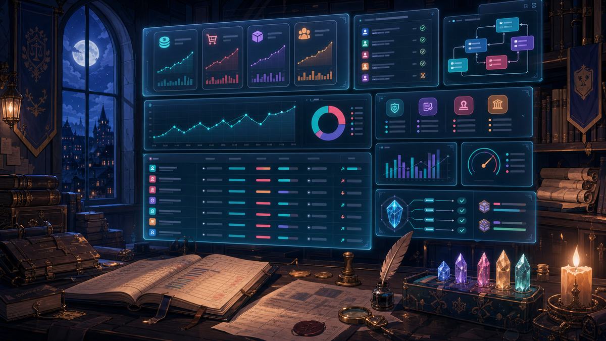

01
Active
ModelPort
自托管 Anthropic-compatible 模型网关，让 Claude Code / VS Code Claude 通过一个本地端口接入多模型路由、协议转换、鉴权、用量观测和管理面板。
我关注 AI 应用层和产品工程之间的交界：既做模型接入、路由、Agent 与数据工作流，也把这些能力放进清晰的前后端系统里，让想法能被真实使用、验证和迭代。
自托管 Anthropic-compatible 模型网关，让 Claude Code / VS Code Claude 通过一个本地端口接入多模型路由、协议转换、鉴权、用量观测和管理面板。
面向量化研究的数据分析 Agent，将策略想法、数据处理、可视化和工作流沉淀在一个可持续迭代的投研工作台里。
旅行规划 Agent，围绕用户偏好、预算约束、路线比较和行程生成做决策辅助，适合作为 AI 助手产品化的样板项目。

面向小团队经营管理、记账和业务协作的全栈系统，覆盖前端界面、后端服务、部署脚本和生产环境配置。
跨境电商选品与好评内容工具，把商品信息、卖点梳理和评论生成流程产品化，服务商家内容运营效率。

围绕股票研究和问财数据的投研辅助项目，用 Python 串联数据获取、分析逻辑和策略探索流程。
这些方向会不断沉淀到开源仓库、产品原型和项目文档里。
围绕 Claude Code、VS Code Claude 和多模型提供商，继续完善协议适配、路由策略、用量观测和小团队控制面板。
把策略想法、数据处理、可视化、评测和结果追踪串成可复用工作流，让 Agent 不停留在一次性对话里。
用前后端产品系统承接业务流程，把内容生成、经营管理、旅行规划等能力做成能被日常使用的界面。
持续补充架构边界、部署说明、验收标准和路线图，让仓库不只是代码，也能解释为什么这样设计。
先把用户目标、业务约束和成功标准说清楚，再决定模型、数据、界面和工程边界应该怎样配合。
把模糊想法变成可以点、可以试、可以观察结果的产品切片，让项目尽早接受真实反馈。
保留清楚的模块边界、可替换的服务入口、部署脚本和能追踪结果的反馈回路。
项目合作、开源交流或 AI 产品工程相关讨论，可以从 GitHub 开始。